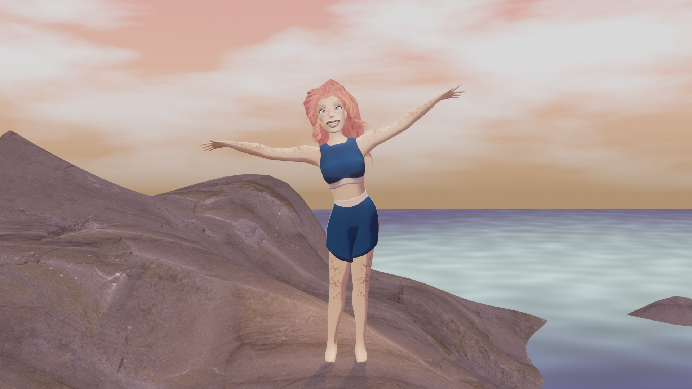
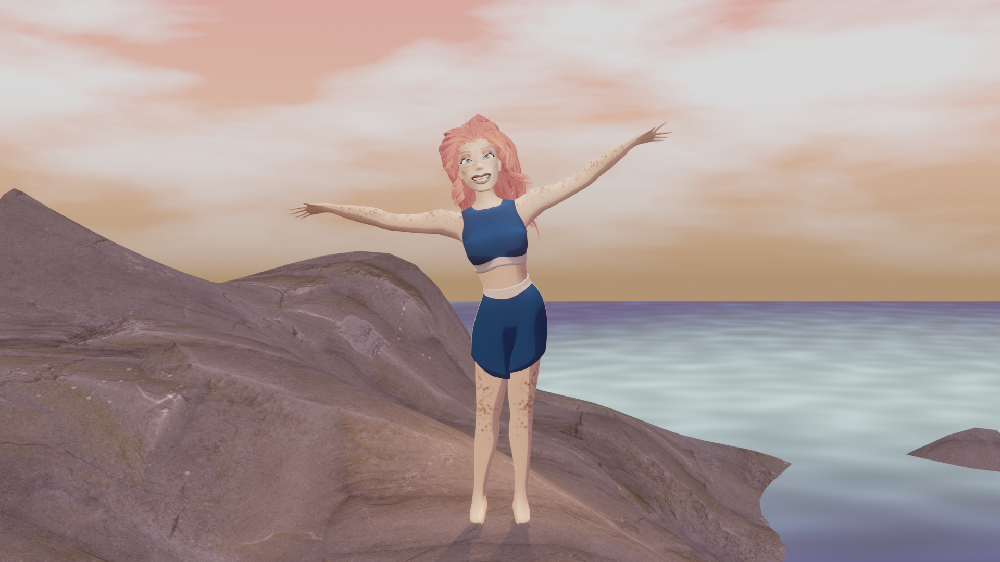
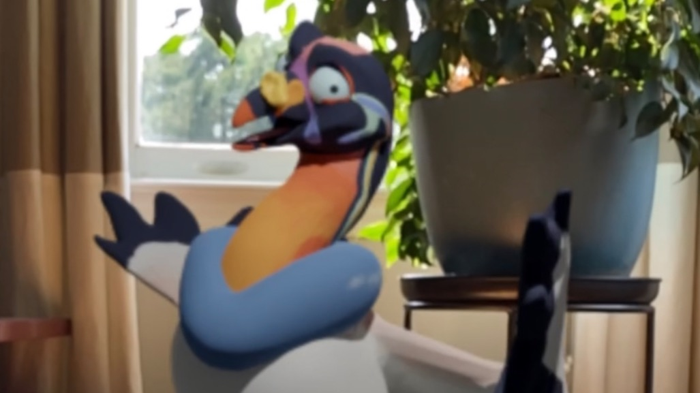
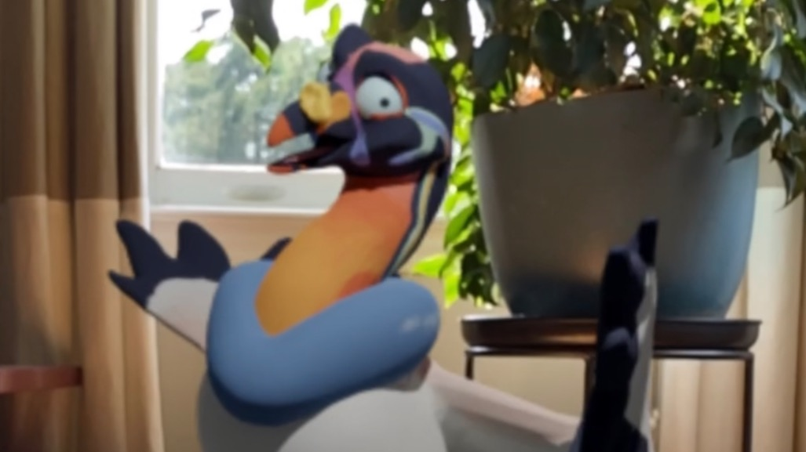

Programmer. Artist. Educator.
Also a swim instructor, but computers don't mix too well with water! As a teaching assistant for Andy Van Dam's intro computer science class, CS15, I teach programming to students who are new to coding. Like swimming, your first experience with coding can be terrifying or awesome, depending on how you're taught. Even the most advanced programmer remembers the first project that got them excited about coding. For me, it was coding the very same interactive whale shark you see to the right of this page! Even outside the classroom, I see every project as an opprotunity to inspire. Whether I'm teaching or on a creative team, I aim to champion the fun, useful, and beautiful side of computer science.
Tip: Move your mouse and watch the whale shark swim!
 |
|
| Virtual Reality Developer | Undergraduate Teaching Assistant |
|---|---|
| September 2023 - May 2024 | May 2024 - Present |


 



 
